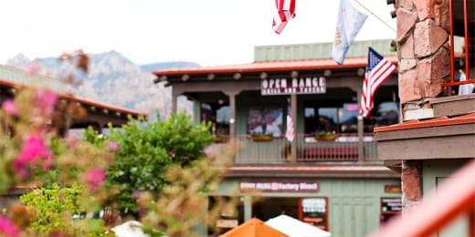

Cедона - сайт для туристов
Причины по которым Седона лучше
Седона — небольшой городок в Аризоне,
заслуживающий большего!
Рассмотрим 5 причин, по которым Седона круче, чем гранд каньон!
Настоящий
городокСедона не аттракцион для туристов, там течет своя жизнь
 - Жилье
- Рекомендуем пожить в настоящем
мотеле, все как в кино! - Сувениры
- Не только китайского,
но и местного производства! - Еда
- Всегда заказывайте фирменный бургер,
вы не разочаруетесь!
Там есть
мост дьяволаДа, по нему можно пройти! Если вы осмелитесь, конечно

Небольшая
площадьВсе интересные места находятся очень близко
Красивая
дорогаЕхать в Седону из Лас-Вегаса совсем
не скучно!Мало
туристовБольшинство едет в Гранд Каньон и толпится там
Поиск гостиницы
Заинтересовались?
Укажите предполагаемые даты поездки,
и мы покажем вам лучшие предложения гостиниц в Седоне